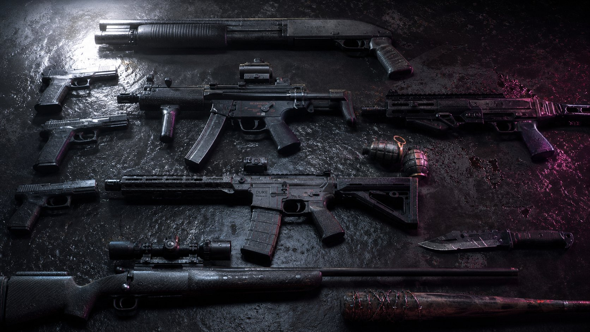

Lance-grenades
Apparition rapportée dans le décryptage des détails du trailer 2. Le nom de catégorie décrit ce que l’analyse reconnaît à l’image; Rockstar n’y joint pas de fiche technique publique.

EXPLOSIFS · CATÉGORIES VISIBLES & LIMITES DES SOURCES
Les trailers montrent des lance-grenades, dont une variante rotative selon les analyses de presse. Roster complet, statistiques, munitions et déblocages restent à établir.
Les décryptages d’IGN identifient un lance-grenades dans le deuxième trailer, puis un lance-grenades rotatif dans le trailer de lancement. C’est une preuve visuelle utile de la catégorie; elle ne suffit pas à confirmer toutes les variantes, types de munitions, dégâts, rayon d’explosion ou règles de déblocage.
Apparition rapportée dans le décryptage des détails du trailer 2. Le nom de catégorie décrit ce que l’analyse reconnaît à l’image; Rockstar n’y joint pas de fiche technique publique.
Le décryptage du trailer de lancement décrit Lucia avec un lance-grenades rotatif. Ne pas extrapoler cette image à un inventaire intégral ni à une disponibilité dès le début de l’histoire.
Les recommandations de cette fiche restent des principes généraux de jeu et de sécurité de mission, non des mesures chiffrées testées. Vérifie les commandes et la portée dans le tutoriel ou une zone sans enjeu; le jeu peut modifier les effets selon difficulté, progression et mise à jour.
| Question | État de la preuve consultée |
|---|---|
| Combien d’explosifs? | Pas de liste complète officielle établie dans les sources consultées. |
| Stats, munitions et dégâts? | Pas de tableau Rockstar vérifié; les chiffres précis partagés par des sites secondaires restent à tester. |
| Emplacements, prix, déblocages? | Non établis ici par une source primaire. Attendre des vérifications en jeu après la sortie. |
| Molotov, grenades et explosifs artisanaux? | Les discussions et listes communautaires sont des pistes, pas une preuve suffisante pour une entrée « confirmée ». |